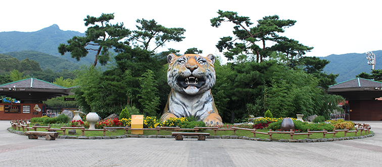

이용정보
|
교통안내
|
사이트맵
|
공지사항
|
편의시설안내

+ 방문안내
1. 이용요금
어른 : 5000원
청소년 : 3000원
어린이 : 2000원
2. 교통안내
지하철 : 이동하시는 지역의 가까운 역에서 4호선으로 환승하시어 대공원역에서 왼쪽문으로 하차 후, 2번출구로 나오시면 됩니다.
자가용 : 경기 과천시 막계동 359, 주말 및 공휴일에는 교통이 매우 혼잡하오니 가급적 대중교통 이용을 바랍니다.
3. 관람 유의사항
사람이 먹는 음식이나 음료를 주면안됩니다. 동물들을 방해하는 행위를 하면 안됩니다. 동물 우리에 가까이 가면 물리거나 다칠수 있습니다. 동물은 눈으로만 관람해 주세요.